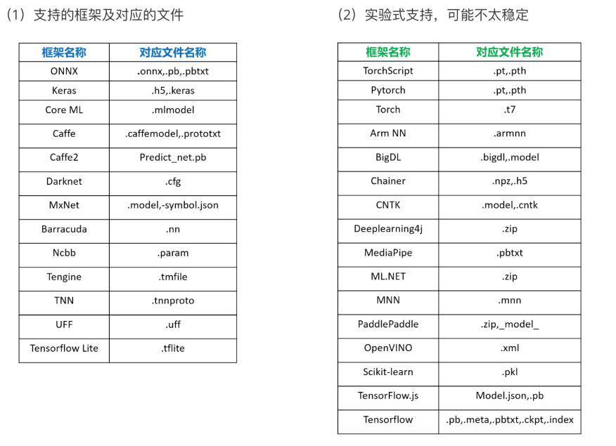

查看模型结构的方法
查看模型结构的方法
1.直接print()
1 | net = nn.Sequential( |
输出如下：
1 | Sequential( |
该方法的优缺点：
- 优点：比较简单
- 缺点：只是输出了模型各层的结构，如果模型结构本身有错，无法识别出来
2.使用torchsummary库
这个库不随pytorch一起被安装，需要自己手动安装
2.1函数介绍：
作用 ： 通过指定输入尺寸，来查看网络每一层的输出尺寸 和 每一层的参数数量。 只需指定 input_size 即可，不需要实际的输入数据。
1 | torchsummary.summary(model, input_size=(3, 224, 224)) |
参数：
model：要查看的网络input_size：指定网络输入尺寸，可以指定四个维度:（B, C, H, W），也可以只指定三个维度:（C, H, W）如果仅指定三个维度的尺寸（不指定batch_size），那么每一层的输出尺寸
output shape都显示为 -1
1 | from torchsummary import summary |
输出如下：
1 | ---------------------------------------------------------------- |
使用该方法时，如果输入不符合模型的输入或模型本身有问题，会报错，因此可以对模型做一个检查。
3.使用netron软件
3.1支持格式

该软件目前对于pytorch的.pt格式支持不是很好，一般需要转成onnx再进行查看
1 | import torchvision |
使用上面这种方法导出的onnx打开是没有办法查看中间数据的维度的
如果想查看中间数据的维度，使用onnx提供的API，以某个输入前馈计算一次并记录所有中间层的维度
1 | onnx.save(onnx.shape_inference.infer_shapes(onnx.load('alexnet.onnx')),'alexnet_.onnx') |
All articles on this blog are licensed under CC BY-NC-SA 4.0 unless otherwise stated.